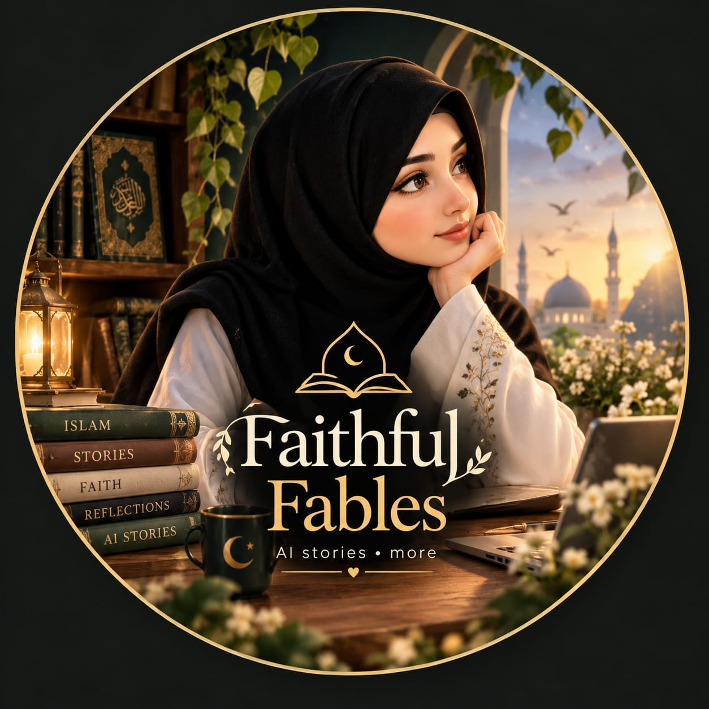

COLLABORATION RECORD
CollaboratedBenish Nisar Coding
Faithful Fables × Benish Nisar Coding
A previous collaboration, brought together by a shared interest in digital skills, AI and creative learning.

Faithful FablesFARHANA · AI STORYTELLERLet's create →FAITH · IMAGINATION · PURPOSE
I'm Farhana, the storyteller behind Faithful Fables. I bring Islamic reminders, life lessons and heartfelt stories to life through cinematic AI visuals.
01 / THE FILM COLLECTION
Explore the stories, reflections and creative experiments from the Faithful Fables collection.
Original portfolio videos · Select a film to watch with sound.
02 / MEET FARHANA
Faithful Fables is my creative space for Islamic AI stories, meaningful reminders and the everyday lessons that bring us closer to what matters.
I blend storytelling, AI-generated imagery and video editing to create a cinematic world rooted in reflection, warmth and purpose.
03 / THE COMMUNITY
A growing space for people who love stories with meaning.
2.4M likes · 80 following
@farhfaithfulfables650 videos
@farhafaithfulfables56147 posts · 175 following
@farhafaithfulfablesProfile snapshot from supplied screenshots · Added 12 November 2026 · Counts may change.
04 / CREATIVE CONNECTIONS
Creative relationships are part of the Faithful Fables journey.
Faithful Fables × Benish Nisar Coding
A previous collaboration, brought together by a shared interest in digital skills, AI and creative learning.
HAVE A STORY IN MIND?
For brand collaborations and creative conversations,
send a message on Instagram.